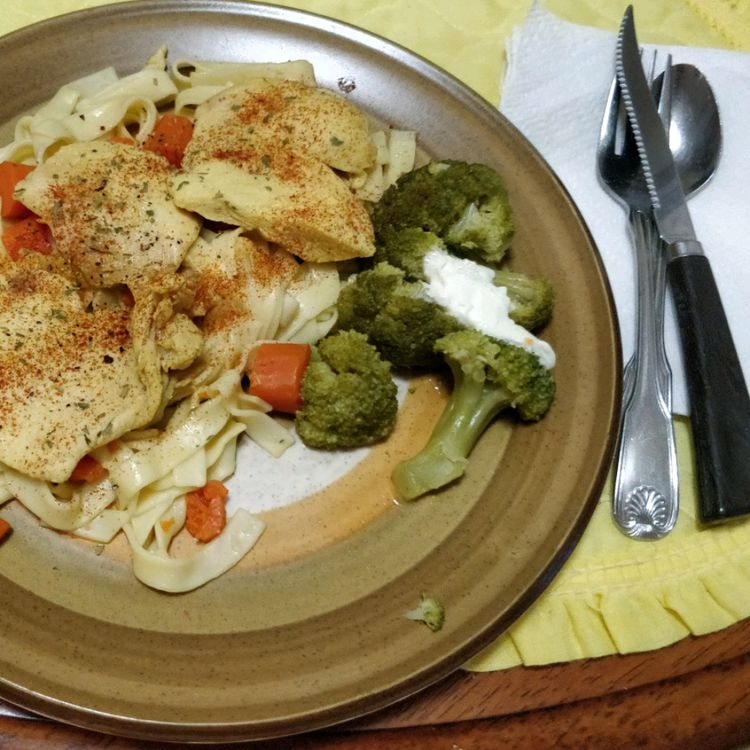
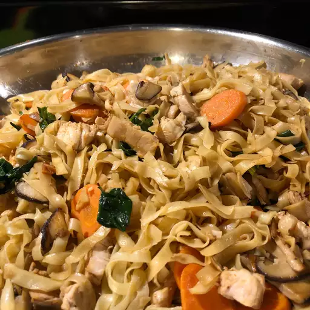

Poached Chicken Breasts
This easy poached chicken recipe has much more flavor and a better taste than boiled chicken.
If you want to eat more lean protein, give this meal a try. I like to eat it with veggies!

Ingredients
Original recipe (1X) yields 4 servings
- 1 (32 fluid ounce) container chicken stock
- 32 fluid ounces water, or more if needed
- 1 yellow onion, peeled and slits cut into it
- 1 bunch celery, stalks (including leaves) separated
- 3 carrots
- 2 tablespoons tomato paste, or more to taste
- 1 tablespoon salt
- 5 whole black peppercorns
- 1 bay leaf
- 2 pounds skinless, boneless chicken breast halves, each cut in half
Directions
- Combine chicken stock, water, yellow onion, celery, carrots, tomato paste, salt,
peppercorns, and bay leaf in a large pot; bring to a gentle simmer.
Decrease heat to medium-low and simmer, checking flavor occasionally,
until vegetables are slightly tender, 30 to 45 minutes.
- Bring stock to a boil and add chicken, pouring in more water if chicken isn't completely covered in liquid.
Bring poaching liquid to a boil; remove pot from heat and cover tightly with a lid until chicken is no longer pink in center,
about 15 minutes. An instant-read thermometer inserted into center should read at least 165 degrees F (74 degrees C).

Editor's Note:
The nutrition data for this recipe includes the full amount of the stock ingredients.
The actual amount of the stock consumed will vary.
Home